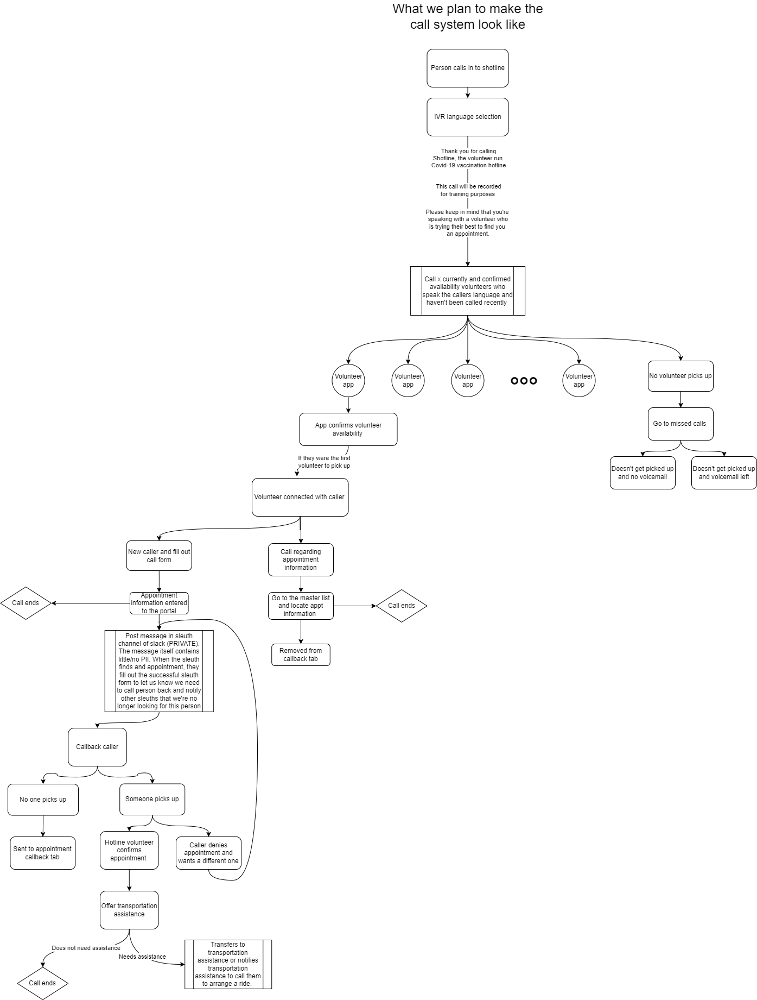
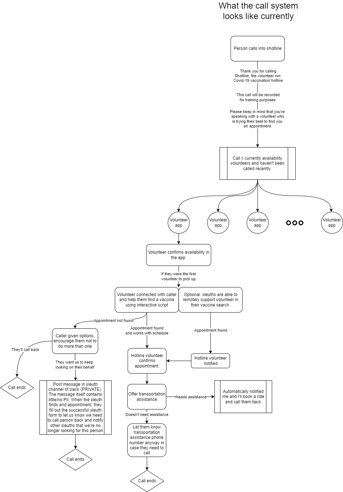

Enter our first prototype.
Which only really dealt with:
When a person needs assistance registering for the COVID-19 vaccine, they call our central phone number. They are able to select their language and listen to introductory messages and a brief disclaimer that the hotline is staffed by volunteers, not medical professionals.
From there, a database query will be initiated. Or not strictly a database call, but an Airtable API request.
Returning the phone numbers of five volunteers who are available and speak the caller’s language sorted by last time called and last time connected.
Then, they are called simultaneously and the first person to pick up and confirm their eligibility (in front of a computer, has at least 20 minutes) is connected to the caller. This process takes less than two minutes and the anonymity of both parties is preserved.
Once the volunteer and caller are connected, the signup process can begin. The volunteer will talk aloud as they are searching the web to share as much information as they can with the caller. We wanted to use this live synchronous method to avoid collecting and storing people’s sensitive (and legally complicated) data.
After 20 or so minutes, if the volunteer they’re supposed to get all the information can and the call would end. Then we’d keep looking and give them a callback.
We thought that this would happen so infrequently that this part didn’t merit a space on our global diagram.
So being the single person with any programming experience on our team it was time to roll up my sleeves and get an MVP out there. ASAP.
Please note: Our team was monolingual. And there were only four of us, so we divided into shifts.
Then bada bing bada boom we did it!!
Easy, right? Wrong.
Our first call was with an 86 year old woman in the south bay. In our initial model, the caller would be on the phone call with us while we looked for vaccines. About 10 minutes into the first phone call and striking out on two appointment websites, I realized how stressful this was, both for the caller and myself.
In a panic, I texted Dorsa for help, seeing if she could find any appointments on her side. After an additional 10 minutes on the phone with the caller, it became clear that I wouldn't find anything while on the phone with her. I told her I would keep looking and would call back.
Our whole model crumbled before our eyes and we had to reevaluate everything.
We had to venture into data collection and privacy land, a land that I personally wanted to avoid.
This prompted the creation of the sleuthing role and our second prototype.
First, I had to fix edge case behaviors:
So this is what our north star looked like
But given the resources that we had:
